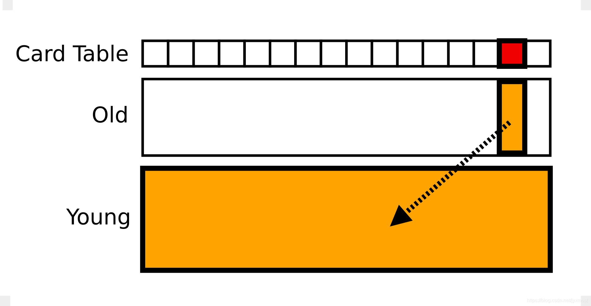
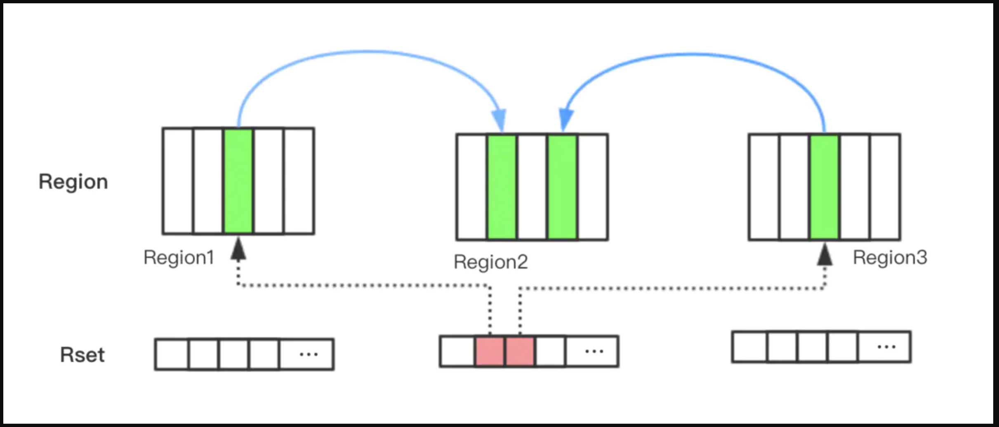
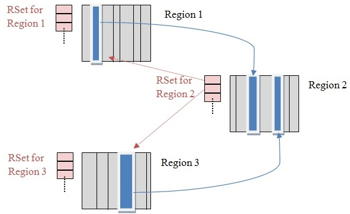

卡表和 RSet
上下文
卡表和 RSet（Remember Set），是 JVM 为了解决分代收集时，live set 扫描需要穿梭到不同的代的时候的效率问题。
使用缓存表来提高查询效率，是化顺序查找为部分随机查找的一种常用的设计思路。
例如，在传统的计算机体系结构中，当我们把内存分成页以后，会有一个页表，页表又会有一个快表，作为一个中间缓存项，来帮助我们查找我们需要使用的页表项（table entry）。
JVM 在进行垃圾收集的时候，有一项非常重要的工作就是确定这一次垃圾收集的对象到底有多少个，即确定 live set 的范围。
对于新生代垃圾收集器而言，这个问题又有其特殊之处。根据 JVM 的弱分代收集假设（weak generational hypothesis）的存在，每次垃圾收集的时候，新生代的扫描范围可能很大，但新生代的 live set 不应该太大。card table/Remember Set 的设计目的，就是尽量减少无用的垃圾扫描范围，使用类似操作系统或者数据库的脏页表的形式，来做类似快表的查询。
卡表（card table）

卡表是 CMS 的解决方案。
卡表通常在 JVM 中实现为单字节数组。当我们把 JVM 划分成不同区域的时候，每一个区域（通常是4k字节）就得到了一个标志位。每一位为 1 的时候，表明这个区域为 dirty，持有新生代对象，否则，这个区域不持有新生代对象。这样，新生代垃圾收集器在收集live set 的时候，可以通过以下两个操作：
- 从栈/方法区出发，进入新生代扫描。
- 从栈/方法区出发，进入老年代扫描，且只扫描 dirty 的区域，略过其他区域。
每次老年代中某个引用新生代的字段发送变化时，JVM就应当将对应的卡表元素设置为适当的值，从而将该字段所在的卡片标记为脏（把读操作的开销用写操作来提前分担，也是一种重要的性能优化手段）。
JVM 在实现卡表的时候，对于所有老年代更新新生代的操作插入了一种写屏障（write barrier），写屏障保证所有更新引用操作能把卡表的脏位设置到最新状态。不仅原生代码拥有这种写屏障，JIT 生成的代码也有这种写屏障。这也使用类似数据库索引/触发器的设计思路，但因为是对于一类操作模式的增强，所以和 AOP 殊途共归。我们实现自己的辅助数据结构也需要引入类似 xxxbarrier 的设计，这样才能保证一致性，这种 barrier 作为 pre 比 post 对一致性的保障要好。
与卡表相关的 JVM 参数是：
1 | |
在 JVM 中，一个 card 的大小（通常是）512字节。在多线程并行收集时，每个线程可以批量扫描多个 card，一批 card 被称为一个 stride。默认一个 stride 含有 256个 card，即每个线程要每次扫描 512 * 256 = 128 K 的内存区域。stride数量太多就会导致线程在stride之间切换的开销增加，进而导致 GC Pause 增长， strides 太少恐怕也会导致单次扫描的时间增长，进而影响整个 GC Pause 。
网上流传有3个 magic number 作为配置值:32768、4K和8K。
RSet（Remember Set）

Remember Set 是从 G1 开始特有的一种数据结构，是卡表的设计思路 + G1 垃圾收集器使用场景的衍生产物。
伴随 Hotspot G1 垃圾收集器的诞生，传统的老年代和新生代都从物理上的连续空间，变成了一个个物理上不连续的空间 region。
JVM 针对这些Region 提供了一个数据结构，也就是 CSet（Collection Set），存储任意年代的 region。
物理上不连续的 region 造成了新生代和老年的引用破碎化，新生代引用老年代，所以产生了 old->young和old->old的跨代对象引用，这时候 JVM 只要扫描 CSet 中的 R Set 即可。
传统卡表的特征是 points-out，即记录当前老年代区域区域所指向的新生代的状况。RSet 则更加细致，每个region拥有自己的 RSet，记录所有其他 region 指向它的指针，它的设计特征是 points-into。老年代可以共用一个传统卡表，但 RSet 必定是每个 region 一个的。RSet 其实是一个 Hash Table，Key 是别的 Region 的起始地址，Value 是一个集合，里面的元素是 Card Table 的Index-所以G1的 RSet 是在 Card Table 的基础上实现的，每个Region会记录下别的Region有指向自己的指针，并标记这些指针分别在哪些Card的范围内。
下图是相互引用的三个region。R1 和 R3 的被细分到了card table 级别。R2 被 R1 和 R3的某些区域引用，所以 R2 的 RSet 会记录到 R1 和 R2 的区域索引，即产生某些循环引用的作用。
一个 Region 的 RSet 如果有值，至少可以证明这个区域是有引用的（如果有循环引用另外讲）；一个区域如果无值，则可以认为这个区域不可达，可以不扫描这个区域（Card Table 可以减少 Minor GC 扫描 old 区来理解 young 区的时间，RSet 则可以减少扫描生成 CSet 选取候选 region 的时间）。
在做YGC的时候，只需要选定young generation region的RSet作为根集，这些RSet记录了old->young的跨代引用，避免了扫描整个old generation（只扫描在 old 里出现的 region，我猜测，young 区里面没有 points-into 的 RSet 对应的 young region 也是可以直接回收的，不必从根出发。）。 而mixed gc的时候，old generation中记录了old->old的 RSet，young->old的引用由扫描全部young generation region（的 card table）得到，这样也不用扫描全部old generation region。所以RSet的引入大大减少了GC的工作量-old 区总是面积大、碎片多，不宜扫描过多。

上图中有三个Region，可以被看作一个 CSet，每个Region被分成了多个Card，在不同Region中的Card会相互引用，Region1中的Card中的对象引用了Region2中的Card中的对象，蓝色实线表示的就是points-out的关系，而在Region2的RSet中，记录了Region1的Card，即红色虚线表示的关系，这就是points-into。 而维系RSet中的引用关系靠post-write barrier和Concurrent refinement threads来维护。
结论
卡表只解决 ygc 少扫老年代的问题，而 RSet 则解决了（G1 对）所有 Region 的扫描问题。
卡表通过对外引用提示我们应该扫描什么区域，这样我们可以避开不用扫描的区域；RSet通过对内引用提示我们应该扫描什么区域，这样我们可以避开不用扫描的区域。
不管是卡表还是 RSet，都通过写表 + 查表的方式减少了对堆的扫描，进而减少 GC 的时间。
ChatGPT 的答案：
卡表（Card Table）和 RSet（Remembered Set）都是 JVM 垃圾回收器（Garbage
Collector，GC）中用于跟踪跨代引用的数据结构。它们主要用于解决在分代收集（Generational
Collection）策略中的问题，即在进行 Minor GC 时，需要找到所有从老年代（Old
Generation）指向新生代（Young Generation）的引用。这些引用被称为跨代引用（Inter-generational
References）。卡表（Card Table）：
卡表是一种简单、高效的数据结构，用于跟踪从老年代到新生代的引用。卡表将 Java 堆划分为固定大小的区域（通常为 512
字节），每个区域对应一个字节的卡表条目。当一个对象引用另一个对象时，JVM 会将相应的卡表条目标记为“脏”（dirty）。在 Minor
GC 时，垃圾回收器会扫描卡表，找到所有标记为脏的条目，然后检查对应的内存区域，找到所有从老年代指向新生代的引用。卡表的优点是简单、高效，但它不能精确地表示跨代引用。在某些情况下，卡表可能会导致不必要的扫描，从而降低 GC 的效率。
RSet（Remembered Set）：
RSet 是一种更精确的数据结构，用于跟踪从老年代到新生代的引用。与卡表不同，RSet
会记录每个老年代对象指向新生代对象的具体引用。这使得垃圾回收器在 Minor GC 时可以更精确地找到跨代引用，从而提高 GC 的效率。然而，RSet 的精确性带来了额外的开销。RSet 需要更多的内存空间来存储引用信息，同时在更新引用时也需要更多的计算资源。因此，在选择
RSet 时需要权衡精确性和性能。总结一下，卡表和 RSet 都是用于解决分代收集策略中跨代引用问题的数据结构。卡表以简单、高效为优点，但可能导致不必要的扫描；而 RSet
提供了更精确的引用信息，但需要更多的内存和计算资源。在实际应用中，不同的垃圾回收器可能会选择不同的数据结构，以满足特定的性能需求。
卡表和 RSet 都解决跨代引用的大面积标记的问题，用不精确的标记来绕开对非 dirty 区域的扫描，都提高 minor gc 的性能。
参考资料：